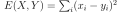
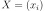
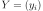
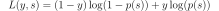
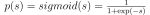

Loss function in ONNX#
Links: notebook, html, PDF, python, slides, GitHub
The following notebook show how to translate common loss function into ONNX.
from jyquickhelper import add_notebook_menu
add_notebook_menu()
from mlprodict.plotting.text_plot import onnx_simple_text_plot
%load_ext mlprodict
Square loss#
The first example shows how to use onnx API to represent the square loss function  where  and .
numpy function#
import numpy
def square_loss(X, Y):
return numpy.sum((X - Y) ** 2, keepdims=1)
x = numpy.array([0, 1, 2], dtype=numpy.float32)
y = numpy.array([0.5, 1, 2.5], dtype=numpy.float32)
square_loss(x, y)
array([0.5], dtype=float32)
onnx version#
Following example is based on onnx Python API, described with more detailed at Introduction to onnx Python API.
from onnx.helper import make_node, make_graph, make_model, make_tensor_value_info
from onnx import TensorProto
nodes = [make_node('Sub', ['X', 'Y'], ['diff']),
make_node('Mul', ['diff', 'diff'], ['diff2']),
make_node('ReduceSum', ['diff2'], ['loss'])]
graph = make_graph(nodes, 'square_loss',
[make_tensor_value_info('X', TensorProto.FLOAT, [None]),
make_tensor_value_info('Y', TensorProto.FLOAT, [None])],
[make_tensor_value_info('loss', TensorProto.FLOAT, [None])])
model = make_model(graph)
del model.opset_import[:]
opset = model.opset_import.add()
opset.domain = ''
opset.version = 14
print(onnx_simple_text_plot(model))
opset: domain='' version=14
input: name='X' type=dtype('float32') shape=(0,)
input: name='Y' type=dtype('float32') shape=(0,)
Sub(X, Y) -> diff
Mul(diff, diff) -> diff2
ReduceSum(diff2) -> loss
output: name='loss' type=dtype('float32') shape=(0,)
%onnxview model
Let’s check it gives the same results.
from onnxruntime import InferenceSession
sess = InferenceSession(model.SerializeToString())
sess.run(None, {'X': x, 'Y': y})
[array([0.5], dtype=float32)]
second API from sklearn-onnx#
The previous API is quite verbose. sklearn-onnx implements a more simple API to do it where every onnx operator is made available as a class. It was developped to speed up the implementation of converters for scikit-learn (see sklearn-onnx).
from skl2onnx.algebra.onnx_ops import OnnxSub, OnnxMul, OnnxReduceSum
diff = OnnxSub('X', 'Y')
nodes = OnnxReduceSum(OnnxMul(diff, diff))
model = nodes.to_onnx({'X': x, 'Y': y})
print(onnx_simple_text_plot(model))
opset: domain='' version=14
input: name='X' type=dtype('float32') shape=(0,)
input: name='Y' type=dtype('float32') shape=(0,)
Sub(X, Y) -> Su_C0
Mul(Su_C0, Su_C0) -> Mu_C0
ReduceSum(Mu_C0) -> Re_reduced0
output: name='Re_reduced0' type=dtype('float32') shape=(1,)
sess = InferenceSession(model.SerializeToString())
sess.run(None, {'X': x, 'Y': y})
[array([0.5], dtype=float32)]
As the previous example, this function only allows float32 arrays. It fails for any other type.
try:
sess.run(None, {'X': x.astype(numpy.float64),
'Y': y.astype(numpy.float64)})
except Exception as e:
print(e)
[ONNXRuntimeError] : 2 : INVALID_ARGUMENT : Unexpected input data type. Actual: (tensor(double)) , expected: (tensor(float))
numpy API#
Second example is much more simple than the first one but it requires to
know ONNX
operators.
The most difficult type is about writing the signature. In the following
example, it take two arrays of the same type T and returns an array
of the same type, T being any element type (float32, float64, int64,
…).
from mlprodict.npy import onnxnumpy_np, NDArrayType
import mlprodict.npy.numpy_onnx_impl as npnx
@onnxnumpy_np(runtime='onnxruntime',
signature=NDArrayType(("T:all", "T"), dtypes_out=('T',)))
def onnx_square_loss(X, Y):
return npnx.sum((X - Y) ** 2, keepdims=1)
onnx_square_loss(x, y)
array([0.5], dtype=float32)
This API compiles an ONNX graphs for every element type. So it works float64 as well.
onnx_square_loss(x.astype(numpy.float64), y.astype(numpy.float64))
array([0.5])
That’s why method to_onnx requires to specify the element type
before the method can return the associated ONNX graph.
onx = onnx_square_loss.to_onnx(key=numpy.float64)
print(onnx_simple_text_plot(onx))
opset: domain='' version=15
input: name='X' type=dtype('float64') shape=()
input: name='Y' type=dtype('float64') shape=()
init: name='init' type=dtype('int64') shape=(0,) -- array([2], dtype=int64)
Sub(X, Y) -> out_sub_0
Pow(out_sub_0, init) -> out_pow_0
ReduceSum(out_pow_0, keepdims=1) -> y
output: name='y' type=dtype('float64') shape=()
log loss#
The log loss is defined as the following:  where . Let’s start with the numpy version.
numpy function#
from scipy.special import expit
def log_loss(y, s):
ps = expit(-s)
ls = (1 - y) * numpy.log(1 - ps) + y * numpy.log(ps)
return numpy.sum(ls, keepdims=1)
y = numpy.array([0, 1, 0, 1], dtype=numpy.float32)
s = numpy.array([1e-50, 1e50, 0, 1], dtype=numpy.float32)
log_loss(y, s)
<ipython-input-18-e0328016fe80>:5: RuntimeWarning: divide by zero encountered in log
ls = (1 - y) * numpy.log(1 - ps) + y * numpy.log(ps)
array([-inf], dtype=float32)
The function may return unexpected values because log(0) does not
exist. The trick is usually to clip the value.
def log_loss_clipped(y, s, eps=1e-6):
ps = numpy.clip(expit(-s), eps, 1-eps)
ls = (1 - y) * numpy.log(1 - ps) + y * numpy.log(ps)
return numpy.sum(ls, keepdims=1)
log_loss_clipped(y, s)
array([-16.515066], dtype=float32)
numpy to onnx with onnx operators#
from skl2onnx.algebra.onnx_ops import (
OnnxClip, OnnxSigmoid, OnnxLog, OnnxAdd, OnnxSub, OnnxMul, OnnxNeg)
eps = numpy.array([1e-6], dtype=numpy.float32)
one = numpy.array([1], dtype=numpy.float32)
ps = OnnxClip(OnnxSigmoid(OnnxNeg('S')), eps, 1-eps)
ls1 = OnnxMul(OnnxSub(one, 'Y'), OnnxLog(OnnxSub(one, ps)))
ls2 = OnnxMul('Y', OnnxLog(ps))
nodes = OnnxReduceSum(OnnxAdd(ls1, ls2), keepdims=1)
model = nodes.to_onnx({'Y': y, 'S': s})
print(onnx_simple_text_plot(model))
opset: domain='' version=15
input: name='Y' type=dtype('float32') shape=(0,)
input: name='S' type=dtype('float32') shape=(0,)
init: name='Su_Subcst' type=dtype('float32') shape=(1,) -- array([1.], dtype=float32)
init: name='Cl_Clipcst' type=dtype('float32') shape=(1,) -- array([1.e-06], dtype=float32)
init: name='Cl_Clipcst1' type=dtype('float32') shape=(1,) -- array([0.999999], dtype=float32)
Identity(Su_Subcst) -> Su_Subcst1
Neg(S) -> Ne_Y0
Sigmoid(Ne_Y0) -> Si_Y0
Clip(Si_Y0, Cl_Clipcst, Cl_Clipcst1) -> Cl_output0
Sub(Su_Subcst1, Cl_output0) -> Su_C02
Log(Su_C02) -> Lo_output0
Sub(Su_Subcst, Y) -> Su_C0
Mul(Su_C0, Lo_output0) -> Mu_C0
Log(Cl_output0) -> Lo_output02
Mul(Y, Lo_output02) -> Mu_C02
Add(Mu_C0, Mu_C02) -> Ad_C0
ReduceSum(Ad_C0, keepdims=1) -> Re_reduced0
output: name='Re_reduced0' type=dtype('float32') shape=(1,)
%onnxview model
sess = InferenceSession(model.SerializeToString())
sess.run(None, {'Y': y, 'S': s})
[array([-16.515068], dtype=float32)]
Same results.
Back to onnx API#
Coding the previous graph would take too much time but it is still possible to build it from the ONNX graph we just got.
from mlprodict.onnx_tools.onnx_export import export2onnx
from mlprodict.onnx_tools.onnx_manipulations import onnx_rename_names
print(export2onnx(onnx_rename_names(model)))
import numpy
from onnx import numpy_helper, TensorProto
from onnx.helper import (
make_model, make_node, set_model_props, make_tensor, make_graph,
make_tensor_value_info)
def create_model():
'''
Converted OnnxReduceSum.
* producer: skl2onnx
* version: 0
* description:
'''
# subgraphs
# containers
print('[containers]') # verbose
initializers = []
nodes = []
inputs = []
outputs = []
# opsets
print('[opsets]') # verbose
opsets = {'': 15}
target_opset = 15 # subgraphs
print('[subgraphs]') # verbose
# initializers
print('[initializers]') # verbose
list_value = [1.0]
value = numpy.array(list_value, dtype=numpy.float32)
tensor = numpy_helper.from_array(value, name='i0')
initializers.append(tensor)
list_value = [9.999999974752427e-07]
value = numpy.array(list_value, dtype=numpy.float32)
tensor = numpy_helper.from_array(value, name='i1')
initializers.append(tensor)
list_value = [0.9999989867210388]
value = numpy.array(list_value, dtype=numpy.float32)
tensor = numpy_helper.from_array(value, name='i2')
initializers.append(tensor)
# inputs
print('[inputs]') # verbose
value = make_tensor_value_info('Y', 1, [None])
inputs.append(value)
value = make_tensor_value_info('S', 1, [None])
inputs.append(value)
# outputs
print('[outputs]') # verbose
value = make_tensor_value_info('Re_reduced0', 1, [1])
outputs.append(value)
# nodes
print('[nodes]') # verbose
node = make_node(
'Neg',
['S'],
['r0'],
name='n0', domain='')
nodes.append(node)
node = make_node(
'Sub',
['i0', 'Y'],
['r1'],
name='n1', domain='')
nodes.append(node)
node = make_node(
'Identity',
['i0'],
['r2'],
name='n2', domain='')
nodes.append(node)
node = make_node(
'Sigmoid',
['r0'],
['r3'],
name='n3', domain='')
nodes.append(node)
node = make_node(
'Clip',
['r3', 'i1', 'i2'],
['r4'],
name='n4', domain='')
nodes.append(node)
node = make_node(
'Sub',
['r2', 'r4'],
['r5'],
name='n5', domain='')
nodes.append(node)
node = make_node(
'Log',
['r4'],
['r6'],
name='n6', domain='')
nodes.append(node)
node = make_node(
'Log',
['r5'],
['r7'],
name='n7', domain='')
nodes.append(node)
node = make_node(
'Mul',
['Y', 'r6'],
['r8'],
name='n8', domain='')
nodes.append(node)
node = make_node(
'Mul',
['r1', 'r7'],
['r9'],
name='n9', domain='')
nodes.append(node)
node = make_node(
'Add',
['r9', 'r8'],
['r10'],
name='n10', domain='')
nodes.append(node)
node = make_node(
'ReduceSum',
['r10'],
['Re_reduced0'],
name='n11', keepdims=1, domain='')
nodes.append(node)
# graph
print('[graph]') # verbose
graph = make_graph(nodes, 'OnnxReduceSum', inputs, outputs, initializers)
# '8'
onnx_model = make_model(graph)
onnx_model.ir_version = 8
onnx_model.producer_name = 'skl2onnx'
onnx_model.producer_version = ''
onnx_model.domain = 'ai.onnx'
onnx_model.model_version = 0
onnx_model.doc_string = ''
set_model_props(onnx_model, {})
# opsets
print('[opset]') # verbose
del onnx_model.opset_import[:] # pylint: disable=E1101
for dom, value in opsets.items():
op_set = onnx_model.opset_import.add()
op_set.domain = dom
op_set.version = value
return onnx_model
onnx_model = create_model()
numpy to onnx with numpy API#
@onnxnumpy_np(runtime='onnxruntime',
signature=NDArrayType(("T:all", "T"), dtypes_out=('T',)),
op_version=15)
def onnx_log_loss(y, s, eps=1e-6):
one = numpy.array([1], dtype=s.dtype)
ceps = numpy.array([eps], dtype=s.dtype)
ps = npnx.clip(npnx.expit(-s), ceps, one-ceps)
ls = (one - y) * npnx.log(one - ps) + y * npnx.log(ps)
return npnx.sum(ls, keepdims=1)
onnx_log_loss(y, s, eps=1e-6)
array([-16.515068], dtype=float32)
onnx_log_loss(y, s, eps=1e-4)
array([-11.909897], dtype=float32)
The implementation is slightly different from the numpy implementation.
1 - y cannot be used because 1 is an integer and the function needs
to know if it is a integer 32 or 64.
numpy.array([1], dtype=s.dtype) - y is better in this case to avoid
any ambiguity on the type of constant 1. That may be revisited in
the future. The named argument is part of the ONNX graph as an
initializer. An new graph is generated every time the function sees a
new value. That explains why the following instructions cannot return
one ONNX graph as they are more than one:
try:
onnx_log_loss.to_onnx(key=numpy.float32)
except Exception as e:
print(e)
Unable to find signature with key=<class 'numpy.float32'> among [FctVersion((numpy.float32,numpy.float32), (1e-06,)), FctVersion((numpy.float32,numpy.float32), (0.0001,))] found=[(FctVersion((numpy.float32,numpy.float32), (1e-06,)), <mlprodict.npy.onnx_numpy_wrapper.onnxnumpy_np_onnx_log_loss_15_onnxruntime_float32_float32___1e-06 object at 0x00000231FC3134C0>), (FctVersion((numpy.float32,numpy.float32), (0.0001,)), <mlprodict.npy.onnx_numpy_wrapper.onnxnumpy_np_onnx_log_loss_15_onnxruntime_float32_float32___0_0001 object at 0x00000231FC313D90>)].
Let’s see the list of available graphs:
list(onnx_log_loss.signed_compiled)
[FctVersion((numpy.float32,numpy.float32), (1e-06,)),
FctVersion((numpy.float32,numpy.float32), (0.0001,))]
Let’s pick the first one.
from mlprodict.npy import FctVersion
onx = onnx_log_loss.to_onnx(key=FctVersion((numpy.float32,numpy.float32), (1e-06,)))
print(onnx_simple_text_plot(onx))
opset: domain='' version=15
input: name='y' type=dtype('float32') shape=()
input: name='s' type=dtype('float32') shape=()
init: name='init' type=dtype('float32') shape=(0,) -- array([1.e-06], dtype=float32)
init: name='init_1' type=dtype('float32') shape=(0,) -- array([0.999999], dtype=float32)
init: name='init_2' type=dtype('float32') shape=(0,) -- array([1.], dtype=float32)
Neg(s) -> out_neg_0
Sigmoid(out_neg_0) -> out_sig_0
Clip(out_sig_0, init, init_1) -> out_cli_0
Sub(init_2, out_cli_0) -> out_sub_0
Log(out_sub_0) -> out_log_0_1
Log(out_cli_0) -> out_log_0
Mul(y, out_log_0) -> out_mul_0
Sub(init_2, y) -> out_sub_0_1
Mul(out_sub_0_1, out_log_0_1) -> out_mul_0_1
Add(out_mul_0_1, out_mul_0) -> out_add_0
ReduceSum(out_add_0, keepdims=1) -> z
output: name='z' type=dtype('float32') shape=()
no loss but lagg, something difficult to write with onnx#
@onnxnumpy_np(runtime='onnxruntime',
signature=NDArrayType(("T:all", ), dtypes_out=('T',)))
def lagged(x, lag=2):
return x[lag:] - x[:-lag]
x = numpy.array([[0, 1], [2, 3], [4, 5], [10, 21]], dtype=numpy.float32)
lagged(x)
array([[ 4., 4.],
[ 8., 18.]], dtype=float32)
print(onnx_simple_text_plot(lagged.to_onnx(key=numpy.float32)))
opset: domain='' version=15
input: name='x' type=dtype('float32') shape=()
init: name='init' type=dtype('int64') shape=(0,) -- array([0], dtype=int64)
init: name='init_2' type=dtype('int64') shape=(0,) -- array([-2], dtype=int64)
init: name='init_4' type=dtype('int64') shape=(0,) -- array([2], dtype=int64)
Shape(x) -> out_sha_0
Gather(out_sha_0, init) -> out_gat_0
Slice(x, init_4, out_gat_0, init) -> out_sli_0_1
Slice(x, init, init_2, init) -> out_sli_0
Sub(out_sli_0_1, out_sli_0) -> y
output: name='y' type=dtype('float32') shape=()
%onnxview lagged.to_onnx(key=numpy.float32)